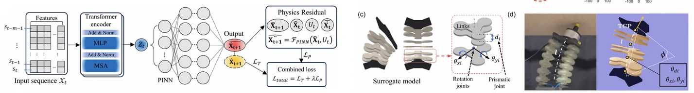

Trajectory Tracking
The transferred policy reproduced circular and star-shaped Cartesian paths on the physical manipulator, with average real-robot errors of 3.38 mm and 6.79 mm, respectively.
A sim-to-real framework that transfers high-fidelity finite-element dynamics into a fast physics-based surrogate for reinforcement-learning control of a pneumatic soft manipulator.
1 Department of Mechanical Engineering and Institute of Advanced Machines and Design, Seoul National University, Seoul, Republic of Korea
2 Department of Electrical and Computer Engineering, Boston University, Boston, Massachusetts, USA
* Corresponding author.
Advanced Intelligent Systems, Volume 8, e202500696, 2026
Published online October 30, 2025

High-fidelity SOFA simulations are used to train a physics-informed dynamics model and calibrate a fast PyBullet surrogate. Reinforcement-learning policies trained in the surrogate transfer to a real pneumatic soft manipulator for trajectory tracking, deformation estimation, and hybrid position-force control.
Accurate soft-robot simulation is generally too computationally expensive for reinforcement learning, while conventional rigid-body simulators cannot directly represent nonlinear soft deformation. This work connects a real pneumatic manipulator, a calibrated SOFA finite-element model, and a contact-aware PyBullet surrogate. Data generated by the FEM model are used to train a Transformer-based physics-informed dynamics model and mappings between pneumatic pressure and surrogate joint configurations.
The accelerated surrogate then supports reinforcement-learning policy training, followed by sim-to-real transfer through calibrated actuation mappings. Experiments evaluate trajectory tracking, force-induced deformation, hybrid position-force control, unseen three-dimensional trajectories, and recovery from pneumatic disturbances.
Real measurements and motion-capture data calibrate a high-fidelity SOFA finite-element model of the three-bellows pneumatic manipulator.
FEM-generated data train a Transformer-based physics-informed dynamics model. FEM geometry and range-of-motion constraints also construct a six-link PyBullet surrogate.
Reinforcement-learning policies are trained at high rate in the surrogate and translated into real pneumatic commands through learned domain mappings.

Policies trained in the accelerated surrogate were transferred to the physical manipulator and evaluated on trajectory, deformation, hybrid-control, generalization, and disturbance-recovery tasks.
The transferred policy reproduced circular and star-shaped Cartesian paths on the physical manipulator, with average real-robot errors of 3.38 mm and 6.79 mm, respectively.

The manipulator followed a tilted elliptical path while regulating surface contact force, producing real-world errors of 4.20 mm in position and 0.70 N in force.

The learned controller generalized to an unseen nonplanar figure-eight trajectory and recovered after a temporary pneumatic-line disconnection.
See the paper for the complete method, assumptions, and quantitative evaluation.
Taehwa Hong, Jungjae Lee, Byung-Hyun Song, and Yong-Lae Park. “Bridging High-Fidelity Simulations and Physics-Based Learning using a Surrogate Model for Soft Robot Control.” Advanced Intelligent Systems 8 (2026): e202500696. Published online October 30, 2025. doi:10.1002/aisy.202500696.
@article{hong2026bridging,
author = {Hong, Taehwa and Lee, Jungjae and Song, Byung-Hyun and Park, Yong-Lae},
title = {Bridging High-Fidelity Simulations and Physics-Based Learning using a Surrogate Model for Soft Robot Control},
journal = {Advanced Intelligent Systems},
volume = {8},
pages = {e202500696},
year = {2026},
doi = {10.1002/aisy.202500696},
publisher = {Wiley-VCH},
note = {Published online 30 October 2025}
}
This work was supported in part by the National Research Foundation under grant RS-2023-00208052 and by the Industrial Strategic Technology Development Program under grant RS-2024-00423940, funded by the Korean Government through MSIT and MOTIE, respectively. The authors declare no conflict of interest.